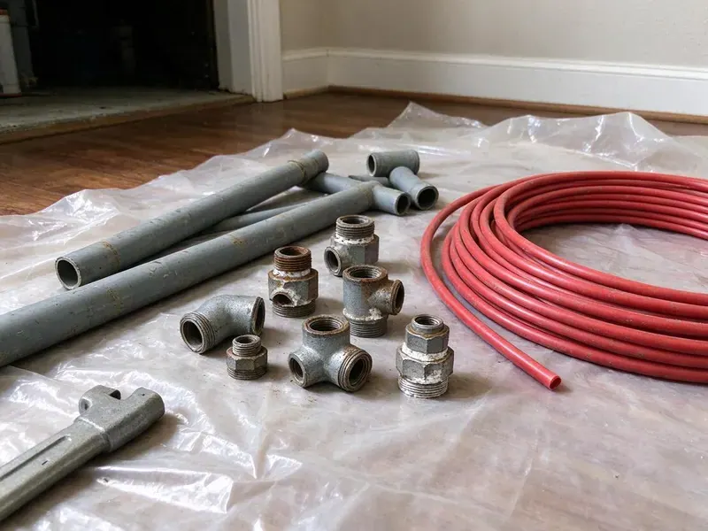

Tankless Water Heater Replacement in Albuquerque, NM
From aging Rinnai and Takagi units to tank-to-tankless swaps, we handle tankless water heater replacement in Albuquerque, NM with tidy installs and clear pricing.
- Code Compliant
- Fast Tankless Replacement
- Fast Tankless Installation
- Manufacturer Warranty Registration

Stop Waiting on Lukewarm Showers. Upgrade Your Tankless in Albuquerque, NM.
Tell us your current unit model and we will quote a matching replacement over the phone.
Dependable Tankless Water Heater Replacement Services in Albuquerque, NM
When it comes to tankless water heater replacement in Albuquerque, NM, GVK Plumbing is the reliable choice. We understand the demands that homes in New Mexico place on water heaters, from mineral content to varying usage. We make sure your new tankless unit is correctly sized and expertly installed for optimal performance and longevity.
Our expertise includes:
- Accurate sizing and model selection for your home.
- Gas line sizing and upsizing for 199,000 BTU tankless units
- Safe gas and electric line connections for new units.

Additional Plumbing Replacement Services in Albuquerque, NM
When repairs are no longer enough, our replacement services in Albuquerque, NM deliver modern, efficient equipment installed right.


Customers
Why Choose GVK Plumbing for Tankless Water Heater Replacement in Albuquerque, NM?
A tankless heater is only as good as its gas supply and venting. We measure both before we quote, so your new unit fires at full output instead of cutting out on high demand.
- Scale Protection, Every install includes isolation valves so the heat exchanger can be descaled without cutting into the pipes.
- Clean Venting, We route venting to meet manufacturer clearances from windows, doors and rooflines.
- Increased Lifespan, Modern tankless water heaters often last much longer than conventional tank models, offering a better long-term investment.
Citywide Coverage
From downtown lofts to suburban homes, our technicians are familiar with the plumbing layouts found throughout Albuquerque. We make sure every installation meets local codes and your expectations.
Experienced Team
Our technicians have pulled and replaced tankless units from Rinnai, Navien, Noritz, Takagi and Rheem, so they know the quirks of each brand's error codes and mounting brackets. They also know which older units can be matched to existing venting and which need new runs.
Safety-First Approach
Safety and code compliance are paramount in every tankless water heater replacement we perform. Our installations follow all New Mexico and local Albuquerque plumbing and gas codes, so your system runs safely and efficiently.
Trusted Certified Albuquerque Plumbing Services Professionals
At GVK Plumbing, we take pride in providing certified plumbing services throughout Albuquerque, NM. Backed by recognized industry credentials, our experienced plumbers combine technical skill with genuine customer care. Whether it is repair, installation, or maintenance, we follow strict safety and quality standards to deliver lasting results you can trust.
Call Us Now PHCC Plumbing Contractor Recognition
PHCC Plumbing Contractor Recognition Better Business Bureau (BBB) Accreditation
Better Business Bureau (BBB) Accreditation Angi Certified Pro
Angi Certified Pro ISO 9001 Quality Management Certification
ISO 9001 Quality Management CertificationExpert Tankless Water Heater Replacement Services in Albuquerque, NM
Tank to Tankless Conversions in Albuquerque, NM
Converting from a 40 or 50 gallon tank to tankless frees up floor space and ends standby heat loss in a garage or closet. The catch is that tankless units often need a larger gas line, often three quarter inch or bigger, plus new venting. We check your meter size and pipe run before quoting so there are no surprises mid-job. We also cap or reroute the old flue and seal the roof penetration if it is no longer used. Expect a conversion to take a full day.

Commercial Tankless Replacement in Albuquerque
Restaurants, salons and small offices often use multiple tankless units linked together on a rack system. When one or more units fail, we replace them and rebalance the cascade controls so they share the load. We check gas pressure under full demand, since commercial racks can draw more than 600,000 BTU combined. Scheduling is easy to work around, so we can work after hours and keep your business open. We also set up a descaling schedule matched to your water usage.
Emergency Tankless Water Heater Replacement in Albuquerque
A sudden tankless water heater failure can leave your Albuquerque home without hot water, which is a serious inconvenience. GVK Plumbing offers emergency tankless water heater replacement to restore your hot water fast. We put a priority on urgent situations, working to diagnose the issue and, if replacement is necessary, get a new unit installed as soon as possible. Our goal is to cut down your downtime and get your home back to normal with reliable hot water.
Electric Tankless Water Heater Replacement in Albuquerque, NM
For properties without natural gas access or those looking for an all-electric solution, electric tankless water heaters are a practical choice. GVK Plumbing offers electric tankless water heater replacement services in Albuquerque, NM. This often involves careful assessment of your home's electrical panel capacity, as these units require substantial amperage. We make sure your new electric tankless unit is installed safely and effectively, providing on-demand hot water without the need for gas lines.
Commercial Tankless Water Heater Replacement in Albuquerque, NM
Businesses in Albuquerque, NM often need robust hot water solutions, and tankless systems can provide the efficiency and capacity needed. We specialize in replacing commercial tankless units for restaurants, offices and other facilities with minimal disruption to your operations. Our plumbers are experienced with high-capacity models and complex plumbing layouts. We deliver a reliable hot water supply that meets your business's demands and health code requirements.
Exterior Mount Tankless Units in Albuquerque, NM
Many homes have tankless heaters mounted on an exterior wall with no venting at all, since the unit exhausts directly outside. These units face sun, rain and temperature swings, which can wear out plastic covers and wiring over time. Even in milder parts of the state, clear winter nights can drop below freezing, so outdoor spigots and evaporative cooler lines should get draining each fall. When we replace them, we check the pipe cover, freeze protection settings and the electrical connection. We can add a protective pipe cover kit to shield the water and gas lines. Exterior models are often the simplest swap when the gas line is already sized correctly.
Residential Tankless Water Heater Replacement in Albuquerque
For homeowners in Albuquerque, upgrading to a tankless water heater offers significant benefits like endless hot water and reduced energy use. We assess your household's hot water demand to recommend the ideal sized unit, so you get strong performance. Our team handles everything from safely disconnecting your old unit to installing the new tankless system. That includes any needed gas and water line adjustments and venting changes to meet current codes.

Recirculation Tankless Upgrades in Albuquerque, NM
If you are tired of running the tap while you wait for hot water, a tankless with a built-in recirculation pump can bring heat to the fixture in seconds. Navien A series and Rinnai units with internal pumps can use a dedicated return line or a crossover valve under the farthest sink. We program schedules so the pump runs only during your morning and evening peaks. That keeps gas use in check while saving thousands of gallons of wasted water a year. This upgrade is popular in long single-story ranch homes.
Tankless Water Heater Replacement Near Me in Albuquerque, NM
If you are searching for tankless water heater replacement near me, you want a local plumber who understands New Mexico water and gas codes. GVK Plumbing serves Albuquerque with trucks stocked for tankless installs. We can usually give you a firm quote after a short phone call and a few photos.
Do not settle on your home's hot water supply. For dependable tankless water heater replacement near me in Albuquerque, choose GVK Plumbing. We provide upfront estimates, transparent communication and expert workmanship, making your upgrade to endless hot water a smooth and stress-free experience.
GVK Plumbing at a Glance
- Fully licensed plumbing team covering Albuquerque, NM
- Same-day appointments and 24/7 emergency response
- Upfront, flat-rate pricing before work begins
- 4.8-star rated by 320+ New Mexico customers
Albuquerque Map
Albuquerque Information
- Population
- 560,274
- Area codes
- 505/575/505
- Service area
- Albuquerque and communities within 40 miles
- Nearby
- North Valley, South Valley, Rio Rancho, Los Lunas
Replacing an old tankless water heater in Albuquerque, NM is essential for a reliable hot water supply, especially with shifting seasonal demands and mineral content that can cut into unit efficiency and lifespan.
Expert Services
Trust our professionals for reliable GVK Plumbing solutions in Albuquerque, NM.
Our Specialized Plumbing Services in Albuquerque, NM
At GVK Plumbing, we provide a complete range of plumbing services across Albuquerque, NM. From leak detection to full system installations, our team ensures fast, precise, and affordable service for both residential and commercial properties. Explore our core services below:


How Our Tankless Water Heater Replacement Process Works in Albuquerque, NM
We keep the process easy to follow from the first call to the final combustion test.
Request a Quote
Call us at (505) 581-4975 or fill out our online form to schedule an first consultation. We will discuss your hot water needs and current system issues, and provide a clear, upfront estimate.
On-Site Assessment
Our licensed plumber will visit your Albuquerque home to look over your existing water heating system, plumbing, gas or electrical connections and venting. This helps us recommend the best tankless model and make sure it is properly sized for your household.
Expert Installation
Once you approve the quote, our team will start the professional installation of your new tankless water heater. We carefully remove the old unit, make any needed plumbing or gas line changes, and make sure the new system is correctly vented and fully operational.
Frequently Asked Questions About Tankless Water Heater Replacement in Albuquerque
A like-for-like gas tankless replacement usually runs $2,800 to $4,500 installed, depending on the brand and venting. Converting from a tank to tankless often costs $4,000 to $6,500 because of gas line and venting upgrades. We give you a written quote before any work starts.
With proper installation and regular maintenance, a new tankless water heater typically lasts 20 to 25 years. This is much longer than traditional tank water heaters, which usually last 10 to 15 years. Regular flushing and descaling can help extend the life of your tankless unit, especially in hard water areas.
Yes, in most areas of Albuquerque and New Mexico, a permit is required for tankless water heater replacement, especially if it involves gas line changes or significant electrical work. Our team at GVK Plumbing will handle all necessary permitting so your installation is fully compliant with local building codes and safety regulations.
A standard tankless water heater replacement typically takes between 4 and 8 hours. This timeframe can vary based on whether we are replacing an existing tankless unit with a similar model or upgrading from a traditional tank water heater. A tank conversion may require more extensive changes to gas lines, electrical or venting.
Repeated error codes, fluctuating temperature, water leaking from inside the cabinet and a unit older than 15 years are common signs. If the heat exchanger is leaking, replacement is typically the better value.
To extend the life and efficiency of your new tankless water heater, regular maintenance is crucial, especially in areas with hard water. This typically involves annual flushing to remove mineral buildup, checking the air filter, and inspecting gas and water connections. GVK Plumbing offers maintenance plans to help keep your unit in top condition.
Most jurisdictions in New Mexico require a permit for water heater replacement, especially when gas piping or venting changes. We take care of permits where they are required.
Most manufacturers offer 10 to 15 years on the heat exchanger and about 5 years on parts for residential use. We add our own labor warranty and register the unit for you.
What People Are Saying About Our Plumbing Experts?

Robert G.
The trenchless sewer replacement saved our front yard. They walked us through the camera inspection footage first so we knew exactly what we were paying for.
Sewer Line Replacement · Santa Fe, NMJames P.
Our commercial plumbing system had a leak under the sink, and GVK Plumbing handled it professionally. The plumbers arrived quickly and restored everything without disruption to our customers.
Commercial Plumbing · South Valley, NM
Mark T.
When our office needed drain cleaning, GVK Plumbing provided quick, reliable service. The plumber arrived on time and made sure every drain flowed perfectly before leaving. Very satisfied.
Drain Cleaning · South Valley, NM
Patricia H.
We had a slab leak that two other companies could not find. GVK Plumbing located it in under an hour, explained our options, and the price matched the quote to the dollar.
Slab Leak Repair · South Valley, NM
Sofia M.
Two new toilets installed in one visit, no mess left behind, and the tech even adjusted a faucet he noticed was dripping. Fair pricing and really friendly.
Toilet Installation · Albuquerque, NMLaura S.
I scheduled a water heater replacement, and the team made the process smooth and affordable. The new unit works perfectly, and they cleaned up after completing the job.
Water Heater Replacement · Los Lunas, NM